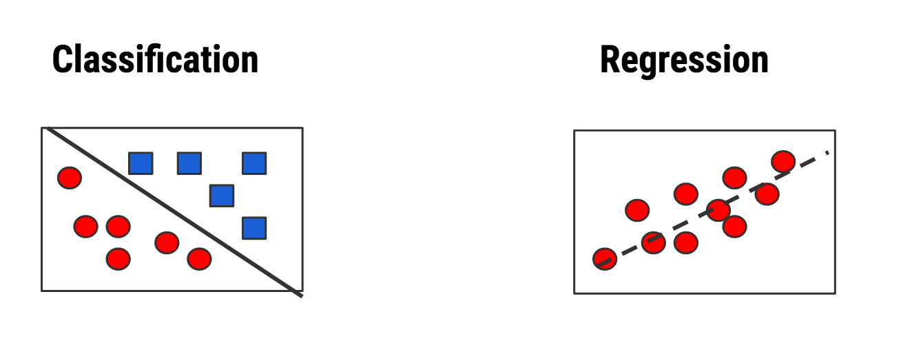
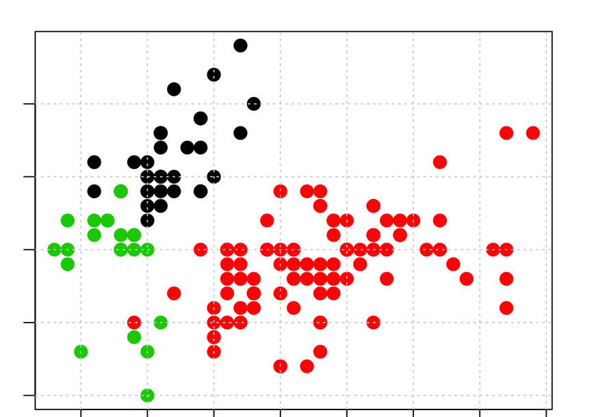
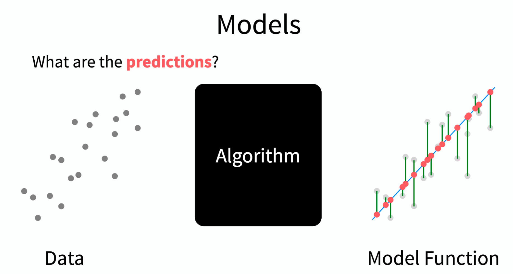

Predictive Modeling
2020-12-15
Chapter 1 Introduction
Predictive Modeling is a type of Machine Learning which itself is a sub branch of Artificial Intelligence. The following graphic provides us with some history of these domains. This is helpful if you are trying to orient yourself in the world of analytics and machine learning. Note that AI has been around for quite some time. The Wikipedia definition of AI is:
The study of “intelligent agents”: any device that perceives its environment and takes actions that maximize its chance of successfully achieving its goals
1.1 Machine Learning
Machine Learning relies upon “patterns and inference”" to “perform a specific task without using explicit instructions”. It is a form of Applied AI that attempts to automatically learn from experience without being explicitly programmed. Think of Predictive Modeling as a subset of this which falls into two categories:
Supervised
Algorithms that build a model on a set of data containing both the inputs and the desired outputs (“labels” or known numeric values). When you want to map input to known output labels. Build a model that, when applied to “new” data, will hopefully predict the correct label.

Some common techniques for Supervised learning include: Generalized Linear Models (GLM), Logistic Regression, Random Forests, Decision Trees, Neural Networks, Multivariate Adaptive Regression Splines (MARS), and K Nearest Neighbors.
Unsupervised
Algorithms that take a set of data that contains only inputs, and find structure in the data (e.g. clustering of data points)

Some common techniques for unsupervised learning include: hierarchical clustering, k-means clustering, mixture models, DBSCAN, Association Rules, Neural Networks
1.2 Predictive Modeling
This lecture is concerned primarily with Predictive Modeling and Supervised approaches in particular. Some examples of Predictive Modeling include:
Predict current CD4 cell count of an HIV-positive patient using genome sequences
Predict Success of Grant Applications
Use attributes of chemical compounds to predict likelihood of hepatic injury
How many copies of a new book will sell ?
Will a customer change Internet Service Providers ?
In this domain there are generally two types of predictive models.
- Classification for Predicting Qualitative Outcomes:
This relates to situations such as whether someone has a disease (“positive”) or not (“negative”). The problem could also be multi classification such as assigning an organism to one of a number of possible species.
- Regression for Quantitative Out Comes
This is when we wish to predict a numeric / continuous outcome such as a final sales price for a house or car. It might also be a prediction of tomorrow’s stock or Bit Coin price.
1.3 In-Sample vs Out-Of-Sample Error
The goal of predictive model is to generate models that can generalize to new data. It would be good if any model we generate could provide a good estimate of out of sample error. It’s easy to generate a model on an entire data set (in sample data) and then turn around and use that data for prediction. But how will it perform on new data ? Haven’t we just over trained our model ?
1.4 Performance Metrics
For either case (regression vs classification) we need some type of metric or measure to let us know how well a given model will work on new or unseen data - also known as “out of sample” data. for Classification problems we look at things like “sensitivity”, “specificity”, “accuracy”, and “Area Under Curve”. For Quantitative outcomes, we look at things like Root Mean Square Error (RMSE) or Mean Absolute Error (MAE). The selection of metric will frequently depend on your domain of interest. We’ll use a couple of different methods.
1.5 Black Box
The good news is that you can treat building predictive models as a “Black Box”. The bad news is that you can treat building predictive models as a “Black Box”.
